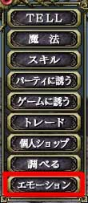
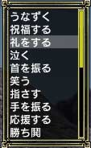

まず使う対象にカーソルを合わせます。そして、エンターキーを押すとメニューが出てくるので「エモーション」を選択してください。次に使う行動の一覧が表示されるので、適当なものを選んでエンターキーを押してください。
マクロの場合、「:emo 感情表現 対象」の順で入力しますが、感情表現の名前を覚えるのが面倒くさいので、使うかどうかは分かりません。
誰かがエモーションを使った場合、水色の文字で表示されます。またエモーションの内容が表示されるのは、say と同じ範囲です。
例）Adobe がBoodoo に対して手を振った場合
Adobe はBoodoo に手を振った
と表示されます。
 
(左：メニュー 右：感情表現) |
|